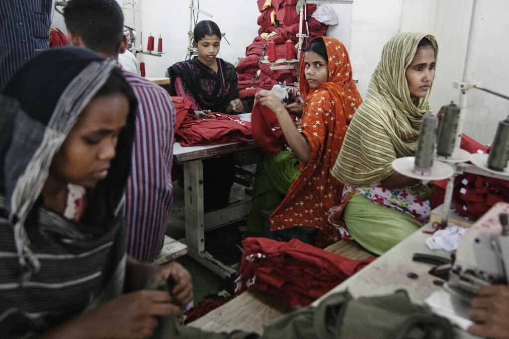

FPS Public Health
2021.04.12 21:37
Federale Overheidsdienst
Volksgezondheid, Veiligheid van de Voedselketen en Leefmilieu
Officiële website - Welkom Service public fédéralSanté publique, Sécurité de la Chaîne alimentaire et Environnement
Site officiel - Bienvenue Föderaler Öffentlicher DienstVolksgesundheit, Sicherheit der Nahrungsmittelkette und Umwelt
Offizielle Website - Willkommen Federal Public ServiceHealth, Food chain safety and Environment
Official web site - Welcome